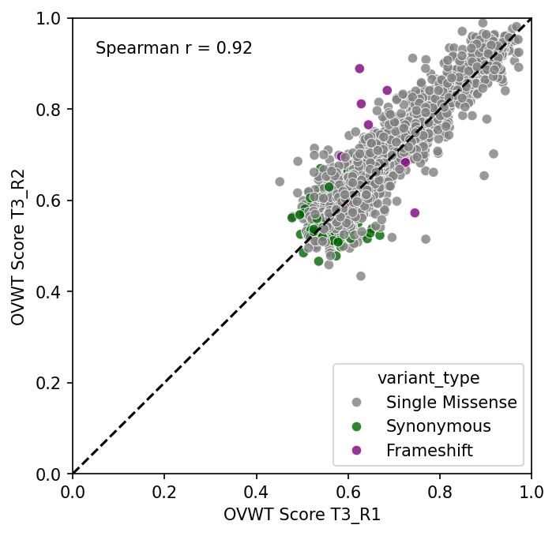
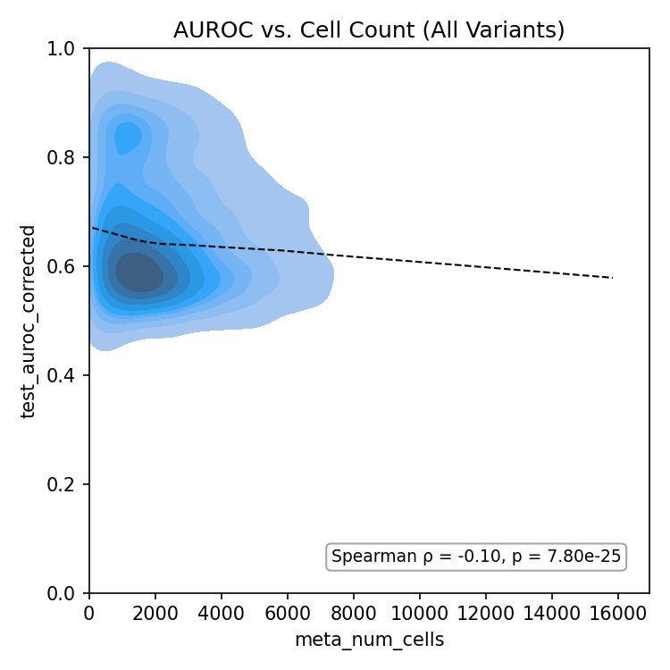
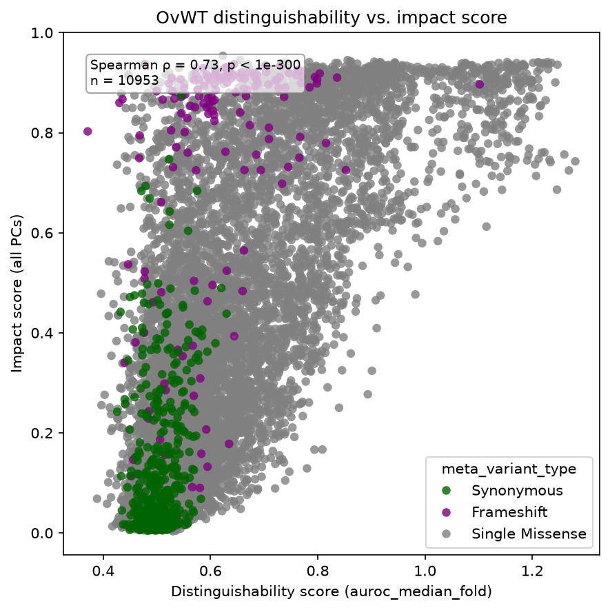
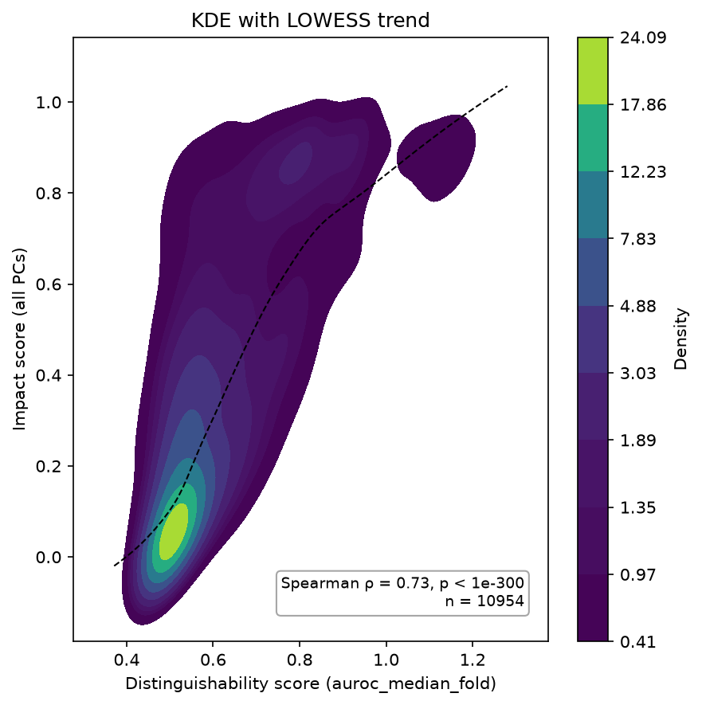
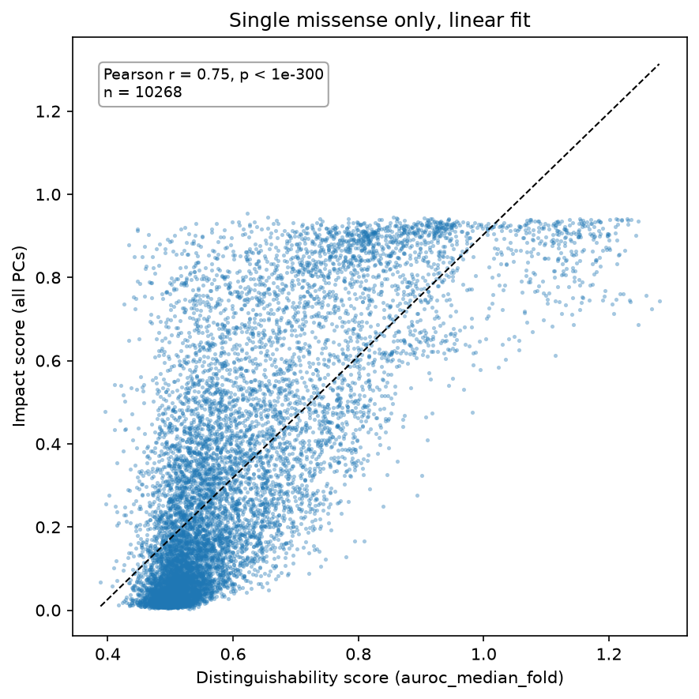
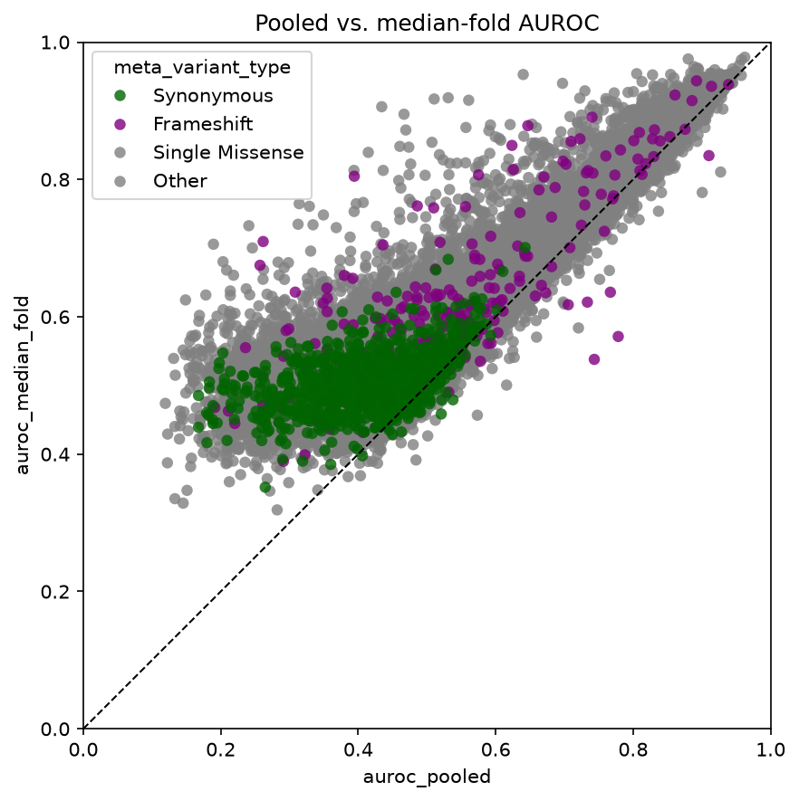
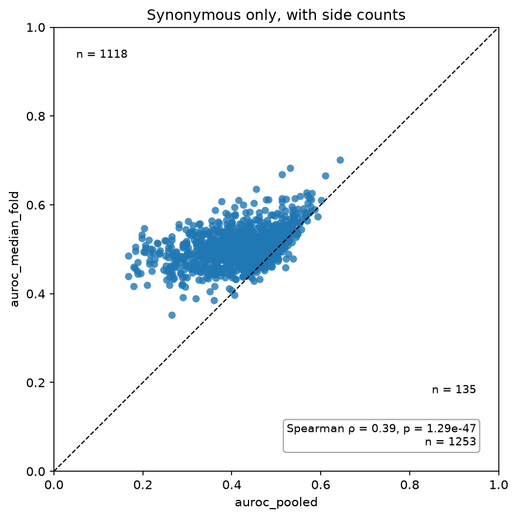

Correlation scatter¶
CorrelationPlot compares two numeric columns, for example replicate vs. replicate, filtered vs.
unfiltered, or a score vs. cell count. It can add:
- a correlation box (
stat="pearson"or"spearman", computed over rows where both values are finite) - a fit line (
fit="linear"or"lowess") - the
y = xline (identity=True) - counts of the points above and below that line (
count_sides=True)
Replicate vs. replicate¶
The two replicates are usually joined side by side first (here with polars' _right suffix):
import fisseqborn as fb
pairs = t3_r1.join(t3_r2, on="meta_aa_changes") # test_auroc, test_auroc_right
(fb.CorrelationPlot(pairs, x="test_auroc", y="test_auroc_right", hue="meta_variant_type",
stat="spearman", stat_loc="upper left", identity=True, lims=(0, 1))
.set(xlabel="OVWT Score T3_R1", ylabel="OVWT Score T3_R2")
.save("vis/T3_R1_vs_T3_R2_ovwt_scatter.png"))

From notebooks/2026-07-29/ovwt_rep_correlation.
Score vs. cell count¶
kind="kde" draws a filled 2-D density in place of the points, and fit="lowess" adds a dashed LOWESS
trend:
(fb.CorrelationPlot(df, x="meta_num_cells", y="test_auroc_corrected",
kind="kde", fit="lowess", stat="spearman",
title="AUROC vs. Cell Count (All Variants)")
.set(ylim=(0, 1), xlim=(0, None))
.save("vis/auroc_vs_num_cells_kde_all.png"))

From notebooks/2026-07-30/ovwt_scores_cell_count. Without hue, fisseqborn's KDE uses viridis
with a density colorbar. Pass cmap= or cbar=False to change that.
Distinguishability vs. impact score¶
With hue, sort the rows first to choose what is drawn on top. Here the Synonymous controls are
drawn last, over the missense cloud:
import polars as pl
hue_order = ["Synonymous", "Frameshift", "Single Missense"]
scored = (profiles.impact_scores([1.0])
.distinguishability(ovwt, score="auroc_median_fold"))
(fb.CorrelationPlot(
scored.filter(pl.col("meta_variant_type").is_in(hue_order)).sort(
pl.col("meta_variant_type").replace_strict({t: i for i, t in enumerate(hue_order)}),
descending=True,
),
x="meta_distinguishability_score", y="meta_impact_score_1.0",
hue="meta_variant_type", hue_order=hue_order,
stat="spearman", stat_loc="upper left", figsize=(6, 6),
title="OvWT distinguishability vs. impact score",
)
.set(xlabel="Distinguishability score (auroc_median_fold)", ylabel="Impact score (all PCs)")
.save("vis/distinguishability_vs_impact.png"))

From notebooks/2026-10-01/dist-vs-impact. stat_loc moves the statistics box away from the
legend.
The same data as a density with a LOWESS trend (kind="kde", fit="lowess"), and the single
missense variants alone with a linear fit (fit="linear", stat="pearson"). Extra keywords such
as s=6, alpha=0.4 go to the scatter:


Pooled vs. median-fold AUROC¶
identity=True with lims=(0, 1) draws the y = x line on square axes. stat=None drops the
statistics box:
scores = fb.OvwtScores.from_pipeline(OVWT_PIPELINE_DIR).pipe(pl.LazyFrame.drop_nulls).variant_type()
(fb.CorrelationPlot(scores, x="auroc_pooled", y="auroc_median_fold",
hue="meta_variant_type", hue_order=hue_order,
stat=None, identity=True, lims=(0, 1), figsize=(6, 6))
.save("vis/pooled_vs_median_fold.png"))
count_sides=True writes how many points fall above and below that line. For synonymous variants
alone, the median-fold score sits above the pooled one for 1118 of 1253 variants:


From notebooks/2026-09-29/ovwtcv.
Use CorrelationPlot(...).correlation() to get (statistic, p_value, n) without drawing anything.